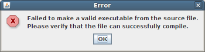
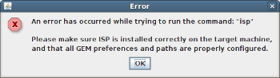

|
|
Troubleshooting |
This section addresses the most common issues encountered when using GEM. If you encounter something that is not not mentioned here, please email your problem to isp-dev@cs.utah.edu. We will get back to you with a solution as soon as possible.
| Problem | Solution |
|---|---|
|
When I run Gem on a particular source file I get a dialog box appears stating that a valid
executable could not be created from the source file:  |
SOLUTION-1
You have most likely run the GEM command "Formally Verify MPI Program" on
a source file that does not contain a main() program entry point, or does not simply compile by itself.
Remember, for anything larger than a simple single-file Managed Build Project you will need to create a Makefile
Project and run GEM via the steps outlined in GEM Makefile Support.
SOLUTION-2 If you get STDERR in the GEM Console like the following:
/usr/local/lib/libisp_prof.so: undefined reference to `MPI::Win::Free()'
/usr/local/lib/libisp_prof.so: undefined reference to `MPI::Datatype::Free()'
/usr/local/lib/libisp_prof.so: undefined reference to `MPI::Comm::Comm()'
/usr/local/lib/libisp_prof.so: undefined reference to `ompi_mpi_cxx_op_intercept'
Then you are most likely using OpenMPI and libmpi_cxx is not being linked in by
ispcc. Locate the script ispcc and add -lmpi_cxx
to the end of the single line in the script beginning with exec (see example below).
exec "/usr/local/bin/mpicc" "-L/usr/local/lib" "-I/usr/local/include/isp" \
-Wl,-rpath=/usr/local/lib -include isp.h $* -lisp_prof -lmpi_cxx
|
| When I run Gem on a particular source file, GEM just hangs. |
You can terminate the current GEM operation by clicking the  "Terminate
Operation" button in the GEM Console View. "Terminate
Operation" button in the GEM Console View.You also may have most run the GEM command "Formally Verify MPI Program" on a source file that does not contain a main() program entry point, or does not simply compile by itself. Remember, for anything larger than a simple single-file Managed Build Project you will need to create a Makefile Project and run GEM via the steps outlined in GEM Makefile Support. |
|
When I try to formally verify my MPI C/C++ program, I get an error message saying that an error
occurred while trying to run a particular command.  |
This particular command either does not exist on the target machine or is not in your path. For anything ISP related, e.g. isp, ispcc, ispCC or ispcxx, you may not have ISP installed. Please install ISP per documentation in the GEM Prerequisites Page and also make sure the ISP paths are correctly set on the ISP Preference Page |
I don’t see the GEM icon... there is no  trident icon anywhere, and the
GEM Views do not exist. trident icon anywhere, and the
GEM Views do not exist.
|
The Eclipse Plug-in was not installed properly. Try installing it again from the update site for your installation of Eclipse or through http://eclipse.org/ptp. |
| I’m running Eclipse and when I try to running GEM, Eclipse becomes unresponsive. | Make sure your process manager is running. GEM assumes your process manager is already running |
| I’m trying to view a log file in the Eclipse editor, and I get editor message saying that the file is out of sync with the file system. | ISP has generates a new log file. Just hit F5 to refresh the Eclipse editor's view of the file. |
| I can't find the log file GEM generated in my CDT project. | Refresh your project. It should be in a directory named "isp" at the same level as the source file. |
Back to Top | Back to Table of Contents
School of Computing * 50 S. Central Campus Dr. Rm. 3190 * Salt Lake City, UT
84112 * isp-dev@cs.utah.edu
License